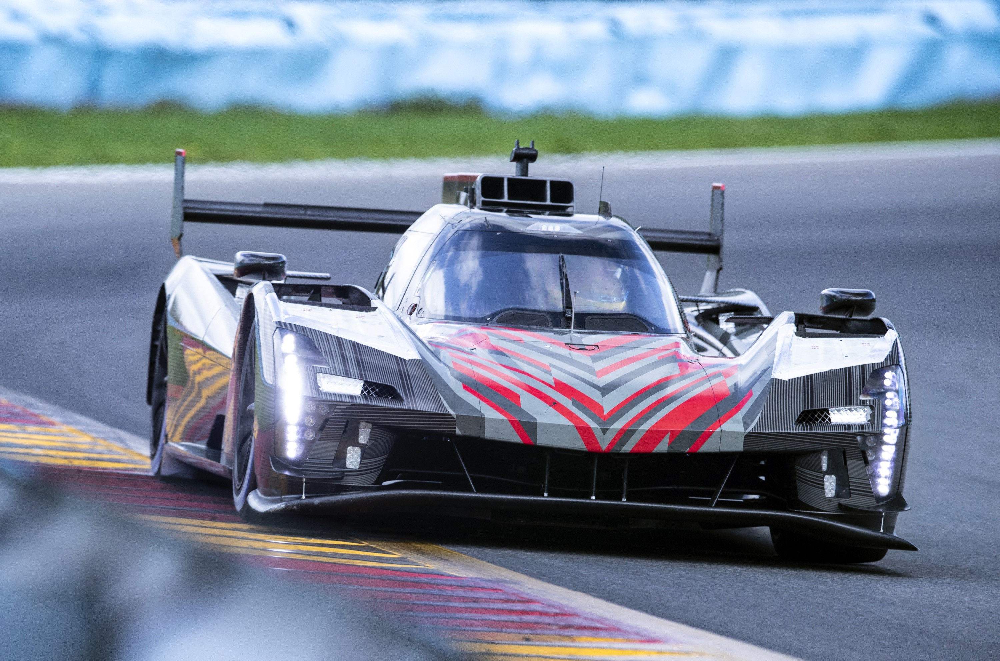
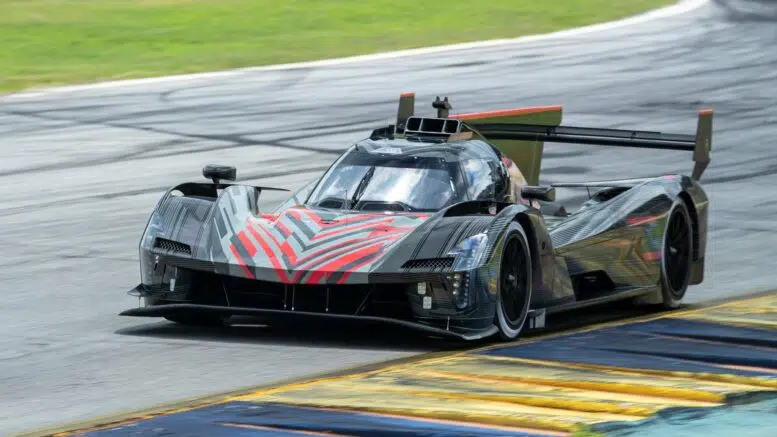
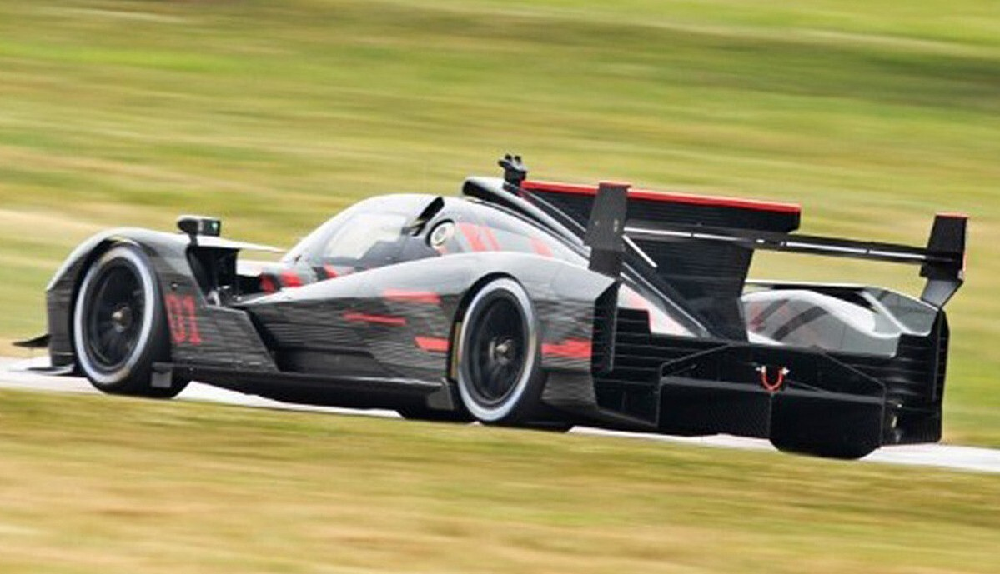

La ou les cadillac seront équipées d'un moteur V8 5.5L, la puissance de ce moteur n'as pas encore été donnée, tout comme le nombre de voiture qui concoureront pour l'écurie.
  Le design de la voiture n'est que provisoire pour la fase de test la peinture finale appellée "covering" n'a pas encore été dévoilée par le constructeur.